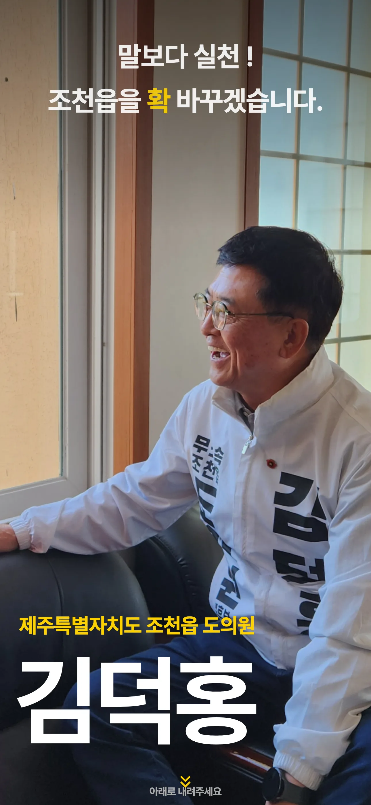

Case 02
직접 만든 것Built solo
1인 빌드
조직도 예산도 없는 무소속 후보,
온라인에서 어떻게 알릴까.
문제Problem
2026년 지방선거, 제주 조천읍에 출마한 무소속 도의원 후보였습니다. 정당 후보는 현수막도, 조직도, 콜센터도 갖추고 시작하지만 무소속에겐 그게 전부 없어요. 가진 건 후보의 38년 행정 경력과 '말보다 실천'이라는 메시지뿐이었죠. 그래서 풀어야 할 문제는 분명했습니다. 짧은 선거 기간 동안, 적은 비용으로, 이름을 처음 듣는 유권자에게도 '이 사람이 누구고 왜 찍어야 하는지'를 한 번에 납득시키는 것.
구조Structure
사람들은 선거 사이트를 정독하지 않습니다. 그래서 '읽게 만들기'가 아니라 '훑어도 남게 만들기'를 택했어요. 위에서 아래로 내려가는 동안 자연스럽게 설득되도록 순서를 짰습니다.
맨 위는 기호·슬로건과 선거까지 남은 시간으로 '지금 정해야 한다'는 긴장을 주는 자리예요. 이어지는 6대 정책은 무엇을 할 사람인지, 약력 타임라인은 믿을 만한 사람인지를 보여 줍니다. 주민 증언이 '남들도 인정한다'는 확신을 더하고, 마지막 보도자료가 '실재하는 후보'라는 신뢰로 마무리합니다.
실행Execution
카피는 표준어 대신 제주 방언('한번 써 봅서!')으로 풀어, 지역 사람에게 옆집 어른의 말처럼 들리게 했습니다.
구현은 유세 현장에서 공유되는 링크라 대부분 휴대폰으로 열린다는 전제로, 모바일을 먼저 설계하고 PC를 맞췄어요. 카카오톡·인스타그램에 붙어도 깨지지 않도록 OG 이미지와 메타까지 직접 챙겼고요. 정보구조·카피·디자인·퍼블리싱·SEO를 전부 혼자, Next.js로 만들었습니다.

Mobile first
모바일 먼저 · PC를 맞춤
결과Impact
선거 기간 내내 캠페인의 공식 디지털 거점이었고, 보도자료와 SNS가 모두 이 한 페이지로 모였습니다. 그리고 후보는 이번 지방선거에서 당선됐어요. 같은 사이트는 지금 당선인의 공식 페이지로 이어지고 있습니다.
‘거점’이 될 수 있었던 건, 사람들이 실제로 머물렀기 때문이에요. 체류를 늘리려고 캠페인 중반에 보도자료 섹션을 투입했는데, 거기 닿은 사람은 평균 4.6편을 정독했고, 체류는 홈의 1.9배가 됐습니다.
사람을 머물게 한 건 더 많은 말이 아니라, 믿을 만한 ‘증거’였다.What kept people wasn’t more talk; it was credible proof.